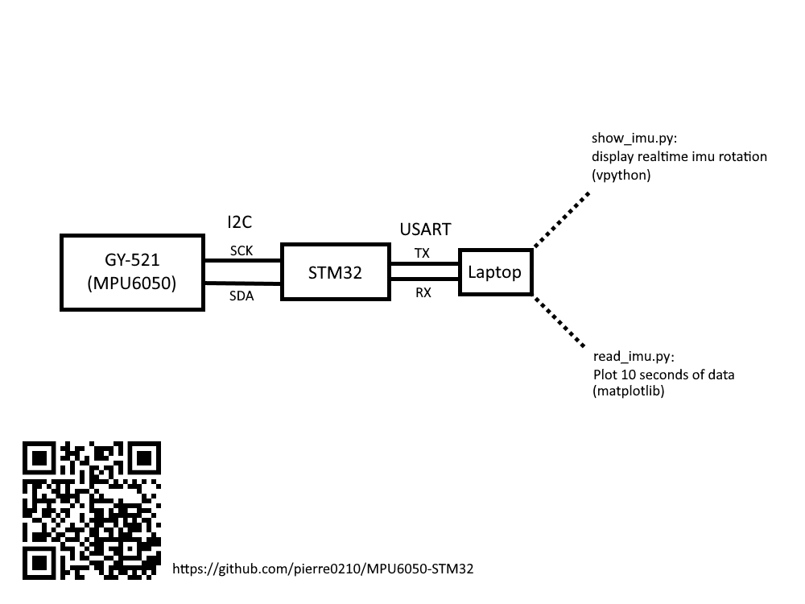
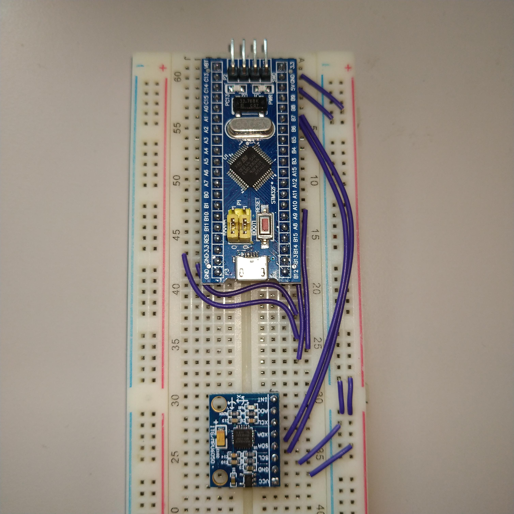

IMU 101
IMU 101
What is IMU?
- IMU ＝ inertia measurement unit
- 3-axis accelerometer＋3-axis gyroscopes
source: https://www.ceva-dsp.com/ourblog/what-is-an-imu-sensor/
為什麼需要濾波？
加速度計會產生高頻振蕩的噪音訊號，又陀螺儀是將角速度對時間積分產生角度，故易產生誤差。

source: https://stackoverflow.com/questions/1586658/combine-gyroscope-and-accelerometer-data
互補濾波
Complementary filter
- 加速度計計算瞬時傾角誤差比較大
- 陀螺儀積分結果易受長時間影響
定時對加速度採樣的角度取平均值 + 短時間內採用陀螺儀得到的角度
加速度計要濾掉高頻訊號，陀螺儀要濾掉低頻訊號

https://stackoverflow.com/questions/1586658/combine-gyroscope-and-accelerometer-data
$$
\text{angle’} = \alpha(\text{angle} + \text{gyro} \times dt) + (1-\alpha)\times(X_a)
$$
- $\text{angle’}$為得到實際角度，$\text{angle}$為前一時刻角度
- $\text{gyro}$為陀螺儀值(角速度)，$dt$為計算週期
- $X_A$為加速度數據換算後的角度值
- $\alpha = 0.98$
卡爾曼濾波
Kalman filter
- 線性
- 純時域
- 高斯雜訊
基本模型-真實狀態
$$
\displaylines{
x_k = Fx_{k-1}+Bu_k+w_k \\
w_k \sim N(0,\ Q_k)
}
$$
- $x_k$ : $k$ 時刻狀態
- $F$ : 狀態變換矩陣
- $u_k$ : 控制向量
- $B$ : 控制輸入模型
- $w_k$ : 過程雜訊
- $Q_k$ : $w_k$ 的共變異數矩陣
基本模型-觀測
$$
\displaylines{
z_k = Hx_k + v_k \\
v_k \sim N(0, R_k)
}
$$
- $z_k$ : $k$ 時刻測量到的狀態
- $H$ : 觀測模型
- $v_k$ : 觀測誤差
- $R_k$ : $v_k$ 的共變異數矩陣
預測
$$
\displaylines{
\hat{x}_ k^{-} = F\hat{x}_{k-1}+B\dot{\theta}_k \\
}
$$
- $F=
\begin{bmatrix}
1 & -\Delta t \\
0 & 1
\end{bmatrix} \
\hat{x}_k =
\begin{bmatrix}
\theta \\
\dot{\theta}_b
\end{bmatrix}_k \
B=
\begin{bmatrix}
\Delta t \\
0
\end{bmatrix}$ - $P_k$ : $x_k$ 的誤差共變異數矩陣
- $P_k = E[(x_k - E[x_k])(x_k - E[x_k])^T]$
- $cov(AX+B,\ AX+B) = var(AX+B)\ = A\ var(X)\ A^T$
修正
$$
\displaylines{
K_k = P_k^-H^T(HP^-_kH^T+R)^{-1} \\
\hat{x}_k = \hat{x}^-_k + K_k(z_k-H\hat{x}_k^-) \\
P_k = (I-K_kH)P^-_k
}
$$
- $K_k$ : 卡爾曼增益 (最小化$P_k$)
- $H =
\begin{bmatrix}
1 & 0
\end{bmatrix}$

實作
裝置&流程
 測試結果 Part 1

測試結果 Part 2
| Pitch | Row |
|---|---|
 |
 |
Reference
Welch, G. and Bishop, G. (2006). An Introduction to the Kalman Filter, Department of Computer Science University of North Carolina at Chapel Hill
Lauszus. (2012). A practical approach to Kalman filter and how to implement it, TKJ Electronics